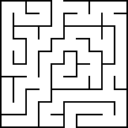

Maze Image
Pseudocode
mate = [ [0,1,0,0,0], [0,1,0,1,0], [0,0,0,0,0], [0,1,1,1,0], [0,0,0,1,0] ] rows = len(mate) cols = len(mate[0]) directions = [(0,1),(1,0),(0,-1),(-1,0)] visited = [[False (cols)] for _ in range(rows)] path = [] def dfs(x, y): if x == rows - 1 and y == cols - 1: path.append((x, y)) return True visited[x][y] = True for dx, dy in directions: new_x, new_y = x + dx, y + dy if 0 <= new_x < rows and 0 <= new_y < cols and not visited[new_x][new_y] and mate[new_x][new_y] == 0: if dfs(new_x, new_y): path.append((x, y)) return True return False if dfs(0, 0): path.reverse() print("find the path:", path) else: print("cannot find the path")
Reflection
This road is not very complicated.It is of medium difficulty.